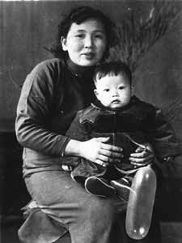
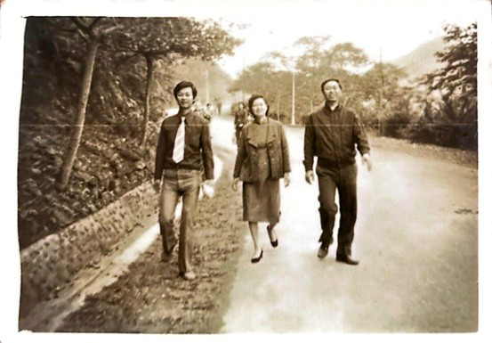
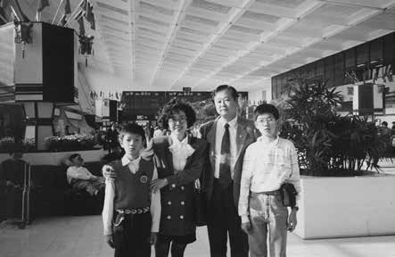
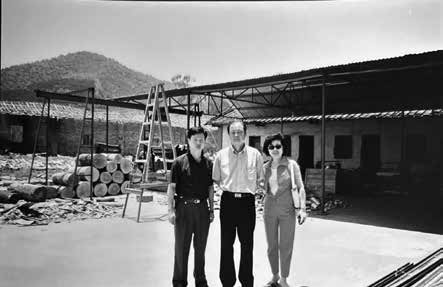
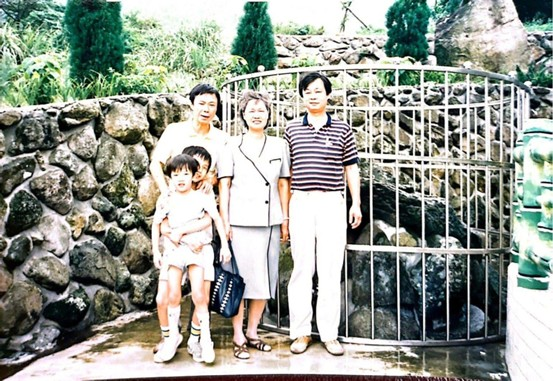
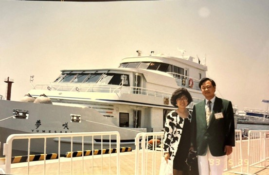
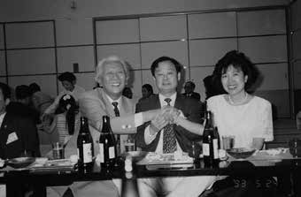

紀文豪出生於一個富裕而穩定的家庭。童年時期的他，生活條件優渥，家中傭人齊備，親友往來頻繁，讚美與肯定幾乎成為日常。在這樣的環境中成長，富裕並不是一種「追求的目標」，而是一種未曾被質疑的日常狀態，也形塑了他早期對世界的理解——人生似乎理應如此安穩而順遂。
然而，這樣的認知在十二歲那年被徹底打破。

紀文豪幼時與奶媽邱金圓的合照
1960年，父親在44歲壯年之際突發中風倒下。短短時間內，原本規模龐大的企業迅速瓦解，家庭的經濟基礎與社會地位同時崩塌。對年僅十二歲的紀文豪而言，那是一種從頂端墜落谷底、從熟悉的天堂跌入陌生地獄的巨大斷裂。家庭結構改變、生活方式翻轉，安全感在一夕之間消失。

創業後的紀文豪，假日時身穿正裝，難得與家人一同郊遊，圖中由左至右依序為： 紀文豪、母親、大哥
這場變故，迫使他提早意識到一件事：
家庭變故之後，紀文豪開始面對來自社會的巨大落差。過去的熱絡與親近，逐漸被疏離與現實取代；升學、生活與未來方向，都籠罩在不確定之中。家庭不再具備資源與保護傘，每一個選擇都必須考量現實條件。
儘管在台北聯考中順利考上市立松山商職，但因家庭經濟狀況無法負擔學費，這條原本被視為「上岸」的道路最終無法走下去。這並非能力不足，而是現實的限制，讓努力不一定能立即兌現。

紀文豪去美國談生意前，長子承緯即將前往澳洲求 學，一家四口在機場合影，圖中由左至右依序為： 次子、妻子、紀文豪、長子
最後，在姑母的協助下，他進入淡江中學就讀。這個選擇，並非退而求其次，而是一次在現實中重新站穩腳步的機會，也成為他人生另一條重要的起跑線。
為了能夠繼續完成學業，半工半讀不再是一種選項，而是唯一的出路。對多數同齡人而言，學生時期仍是被照顧、被安排的階段；但對紀文豪來說，這是一段必須同時扮演「學生」與「家庭承擔者」的青春。

紀文豪與妻子劉柑柑一同前往中國大陸，與採購商代 表人於福建的南靖廠外合影，圖中由左至右依序為： 採購商代表人、紀文豪、妻子劉柑柑
在家庭最困頓的時期，姑母與姑丈雷懋林成為他重要的支柱。姑母替他介紹了一份在老淡水擔任球僮的工作，每天可賺取50元，換算成現代約兩千元的收入。這份工作不僅實質支撐了他的求學生活，更象徵著一種關鍵力量——在逆境中，有人願意伸手接住你，但你仍必須自己站起來。
這段經歷，使紀文豪比同齡人更早理解責任、勞動與自立的意義，也奠定了他日後面對風險時，不輕言退縮的性格基礎。
進入社會、嘗試創業之後，紀文豪的人生仍未立即走向穩定。在事業尚未成形、前途充滿不確定的階段，太太劉柑柑始終陪伴在他身旁。面對創業初期的艱難與多次危機，她沒有抱怨，也沒有動搖，而是選擇全心支持他的決定，成為他最穩定、最重要的後盾。

與家人出遊的照片

一九九三年，紀文豪攜妻子帶領西南獅子 會前往日本大阪獅子會姐妹會拜會，彼方款待眾人搭乘圖中的渡輪環遊關西港
紀文豪也深深感念父母所傳承的堅忍性格。對他而言，家庭並不只是情感上的依靠，而是一種讓人有勇氣承擔風險、做出長期投入決策的力量來源。正是在被理解、被信任的關係中，他得以一次次撐過低谷。

與日本大阪港獅子會獅友西川博介合影，圖中由左至右依序為：西川博介、紀文豪、妻子